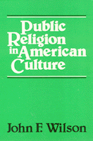

|  |
Public Religion in American CultureJohn F. Wilsoncloth EAN: 978-0-87722-159-3 (ISBN: 0-87722-159-6) |
"A superb historical-critical study of the use of the concept of civil religion in recent scholarship."
—Church History
"Why is walking a dog different than riding [in] a car? Our connection with animals arises from us having similar bodies, needs, and emotions. Marc Bekoff eloquently stresses this kinship and the sensitivity that comes with it—or ought to come with it—in a book full of fresh insights into the inner lives of animals."
—Frans de Waal, author of Our Inner Ape
Philosophy and Ethics
American Studies
© 2015 Temple University. All Rights Reserved. This page: http://www.temple.edu/tempress/titles/178_reg.html.